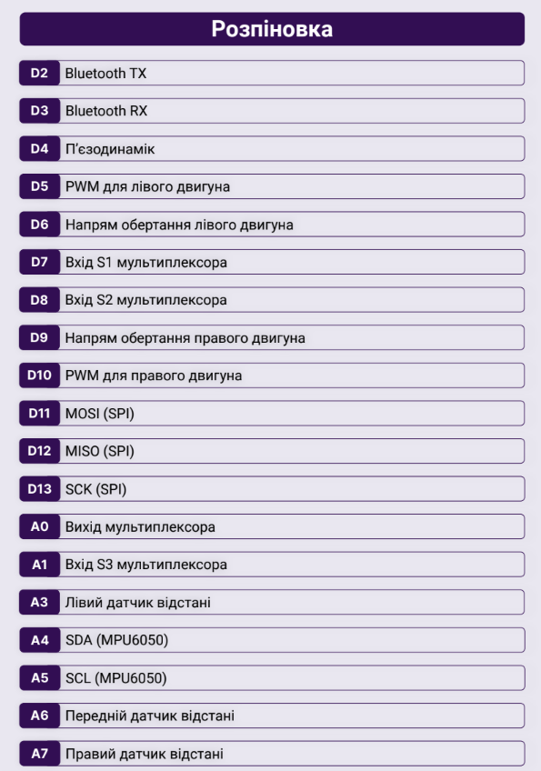

Підказки до MakerTime

Плата: Arduino Nano
Processor: Atmega328P
Функції які необхідно писати у void setup()
Serial.begin(<Швидкість>)
pinMode(<Порт>, <Мод>)
Функції які необхідно писати у void loop()
Оновлення змінних
Serial.print(<Текст>)
Serial.println(<Текст>)
analogRead(<Порт>)
digitalRead(<Порт>)
Приклад оголошення pinMode
pinMode(5, OUTPUT)
Приклад зчитування з аналогового порту
analogRead(A3)
Фрагмент коду для зчитування даних з аналогового порту та виведення їх у монітор порту
int val = analogRead(A3);
Serial.println(val);
Функція для керування моторами
void movement(int pwmA, int SpeedA, int pwmB, int SpeedB){
int truePWMB;
int truePWMA;
if (SpeedA == 1){
truePWMA = pwmA * -1;
}
else{
truePWMA = pwmA;
}
if (SpeedB == 1){
truePWMB = pwmB * -1;
}
else {
truePWMB = pwmB;
}
digitalWrite(6, SpeedA);
digitalWrite(9, SpeedB);
analogWrite(5, truePWMA);
analogWrite(10, truePWMB);
}
Приклад виклику функції для керування моторами
movement(50, 1, 50, 1); // Для руху назад
movement(50, 0, 50, 0); // Для руху вперед
movement(50, 1, 0, 1); // Для руху вліво
movement(0, 1, 50, 1); // Для руху вправо
movement(0, 0, 0, 0); // Для зупинки
Приклад зупинки кванта, якщо попереду є перешкода
int center = analogRead(A6);
// Значення приблизні
if(center > 90){
movement(0, 0, 0, 0);
}
Приклад повороту кванта
int right = analogRead(A7);
// Значення приблизні
if(right > 90){
movement(50, 1, 0, 1);
}